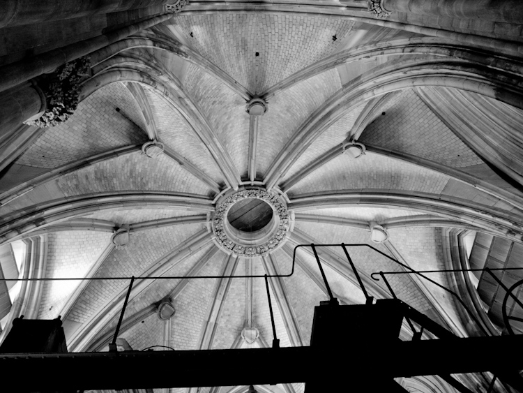

An old man takes an evening walk near disused coal mines in Nordrhein-Westfalen.
Inside the dome of the cathedral at Köln.
Winter in the Harz Mountains, central Germany.
Sunset at a farm near Kreiensen, in Niedersachen.
A water tanker sits in a snow-covered field in winter. Near Kreiensen, in Niedersachsen
Sunset through a forest hill. Snow covers the upper reaches, and algae still grows on the bark of trees, coating them a phosphorescent green. Near Kreiensen, in Niedersachsen
Carneval in the Black Forest.
The Aula, or main hall of the University of Heidelberg.
Waiting for the train in the Hauptbahnhof, Berlin.
Friedrichstraße Subway station, Berlin.
Grafitti on a door in a large housing complex near East Berlin.
Grafitti on abandoned building in central Berlin.